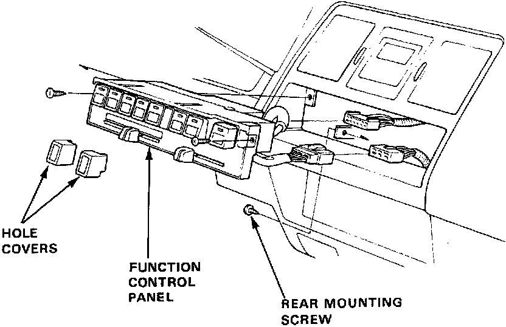
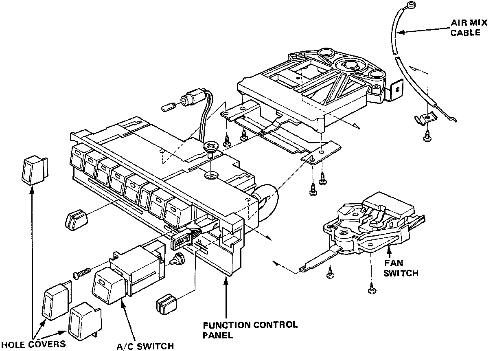

Control Assembly: Service and Repair
Function Control Panel Replacement
1. Remove the glove box.
2. Remove the rear mounting screw (1) for the function control panel.
3. Remove the hole covers (2).
4. Remove the screws (2).
5. Disconnect the air mix cable.
6. Remove the function control panel.
7. Disconnect the connectors.
8. Install in the reverse order of removal.
Function Control Panel Overhaul
